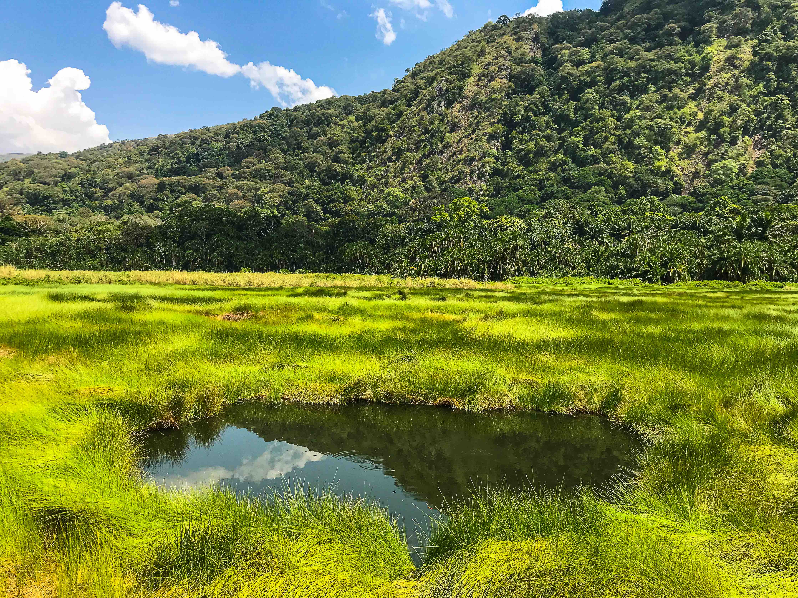
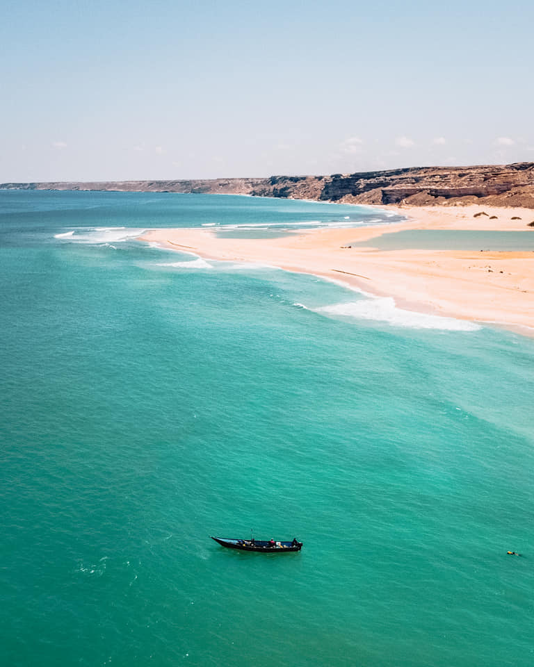
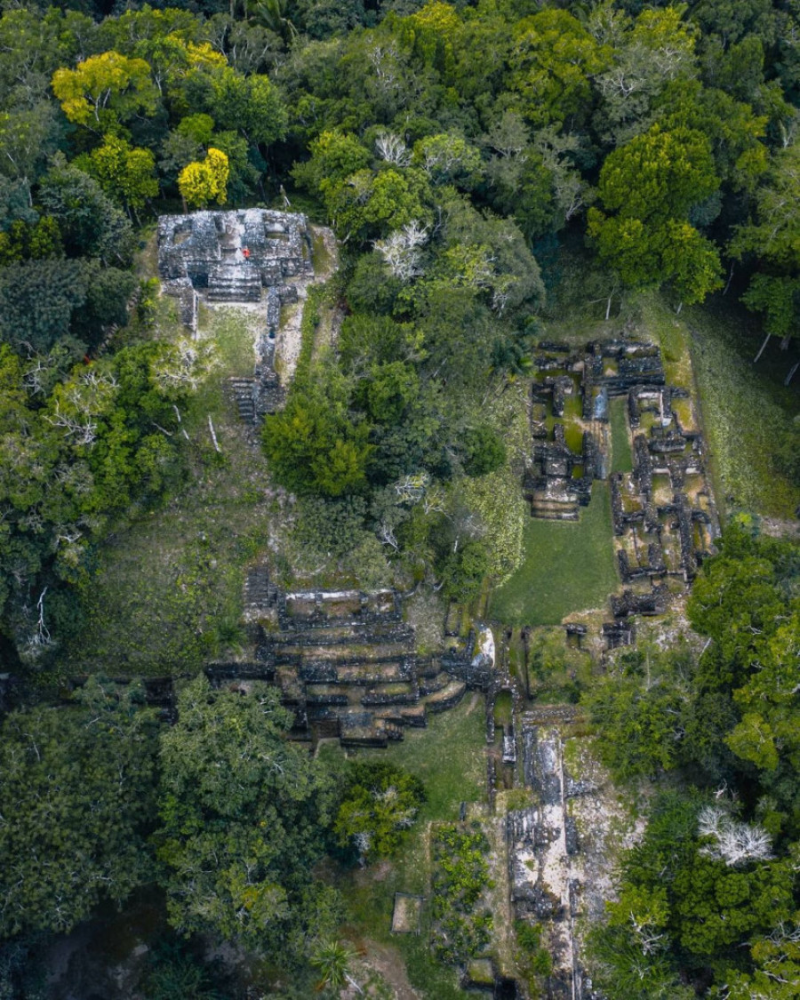

Nacionalni park Kibale u Ugandi. Vrlo skupa kao destinacija, na ture se ide sa pratiocima(rendžeri) koji su naoružani puškama. Razlog je mogućnost susreta sa slonovima koji su često agresivni.

Eyl, glavni grad Somalijskih pirata. Neverovatna plaža, a za ovaj grad kaže se još i da je najbolje čuvana tajna Somalije.

Ostrvo Caye Caulker u državi Beleze. Predivno ostrvo, plaže i zalasci sunca su neverovatni, a u blizini je i poznata Plava rupa.
